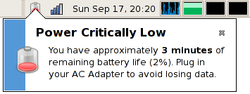

See GNOME Power Manager in action
GNOME Power Manager is a session daemon for the GNOME desktop environment that makes it easy to manage your laptop or desktop system.
These pages are meant to help you find information about GNOME Power Manager.
GNOME Power Manager is written in C, and has additional dependencies of:
Power management is an essential job on portable computers, and becoming more important on todays high-powered desktops. It uses many complex (and sometimes experimental) parts of the system - each of which are slightly different, and may contain quirks to work around. The power management policy could be influenced and tweaked by an huge number of options, and each new laptop model brings more possibilities and options. This should all work in the background without even being noticed by the user.
For example modern machines allow a many options to reduce power consumption:
And they support various actions to match users needs:
GNOME Power Manager is released under the GNU General Public License (GPL).